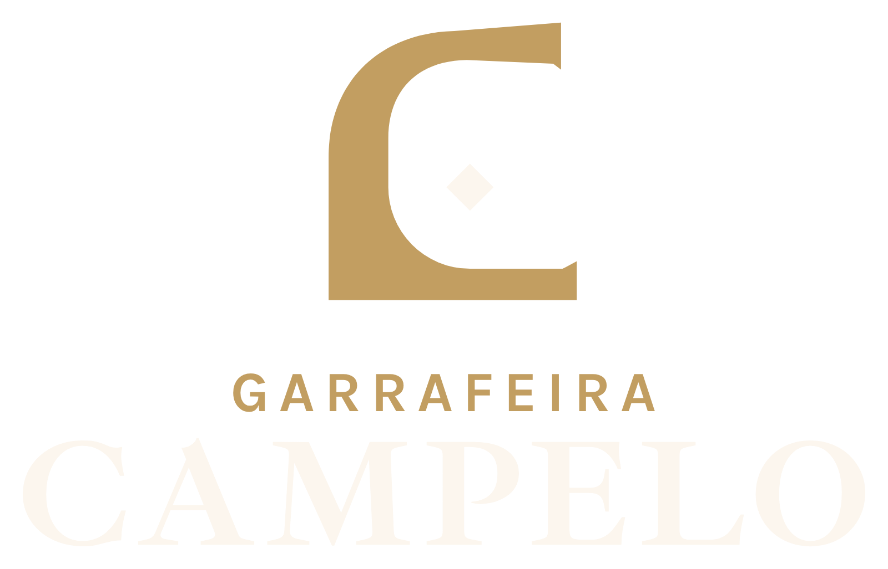
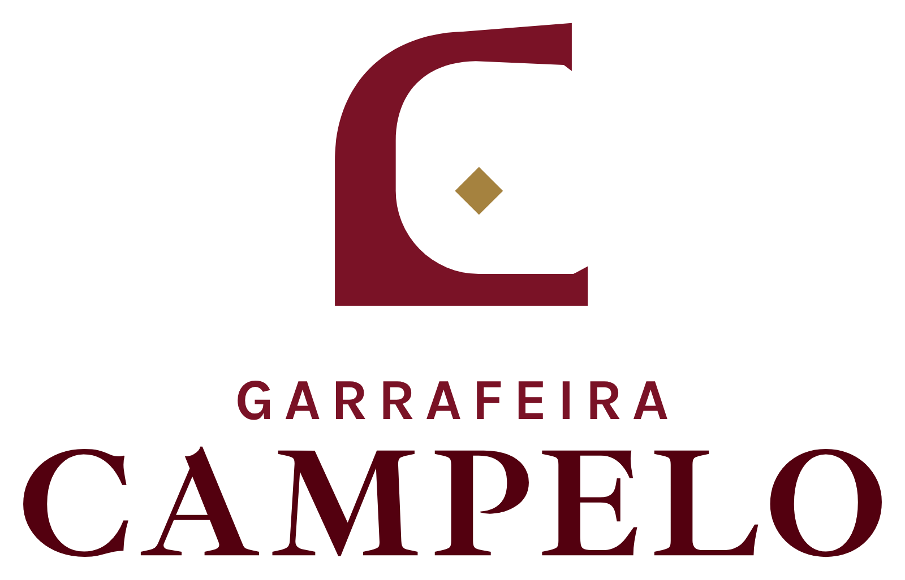

Cantaria com a casa. Os PNG têm fundo transparente: cada um aparece aqui no fundo para que foi feito.
marca-para-fundo-escuromarca-para-fundo-claromarca-uma-corhorizontal-para-fundo-escurohorizontal-para-fundo-clarohorizontal-uma-cor
vertical-para-fundo-escuro
vertical-para-fundo-clarovertical-uma-cor